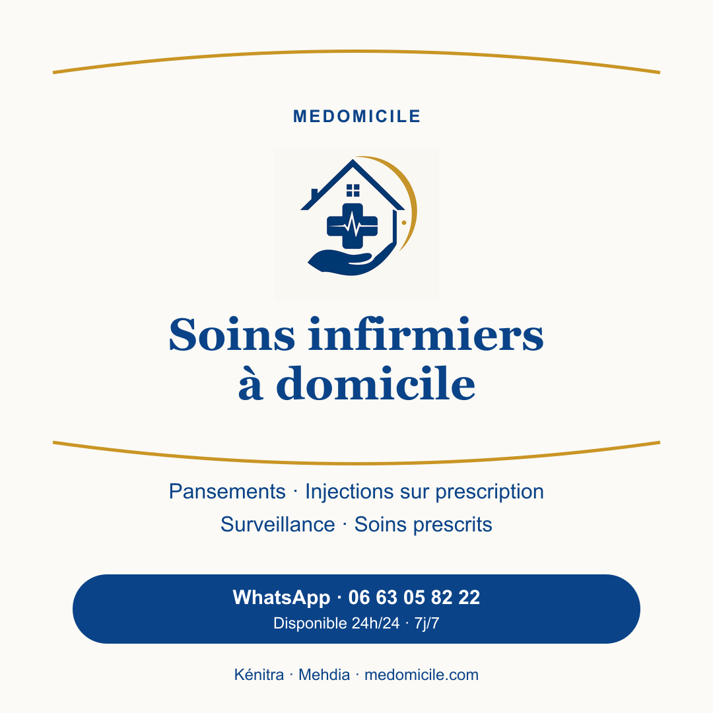

الرئيسية
رعاية تمريضية منزلية في القنيطرة
ممرض في المنزل في القنيطرة
تحققوا من إمكانية الرعاية التمريضية المنزلية في القنيطرة وسكنية وفورات، المعمورة، المسيرة، أولاد أوجيه، بير الرامي، فال فلوري، المدينة العليا، وسط المدينة وميموزا.

رعاية منزليةالتوفر يؤكدخدماتنا
رعاية مناسبة لوضعكم
كيف يتم الأمر؟
طلب في ثلاث خطوات
تواصلوا مع ميدوميسيل عبر الهاتف أو واتساب.
اذكروا الوصفة والمنطقة والوقت المناسب.
يتم تأكيد الرعاية والموعد والمنطقة والتعريفة قبل التنقل.
المنطقة والتوفر
رعاية تمريضية في القنيطرة
مهم
الرعاية التمريضية لا تعوض خدمات الطوارئ
عند وجود حالة تهدد الحياة أو صعوبة في التنفس أو فقدان الوعي، اتصلوا فوراً بالرقم 15.
طوارئ القنيطرة